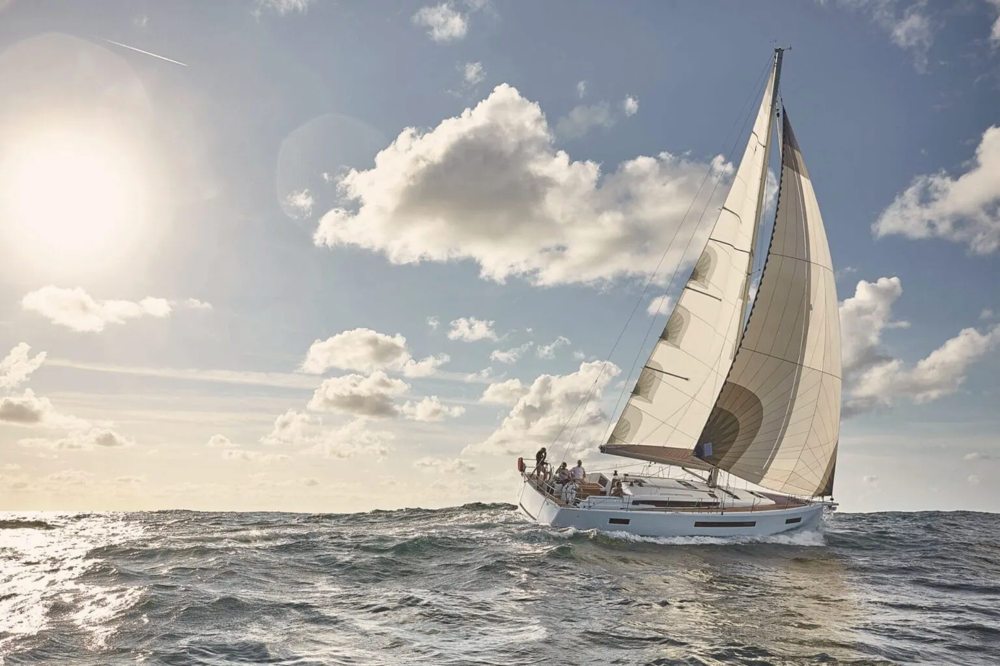
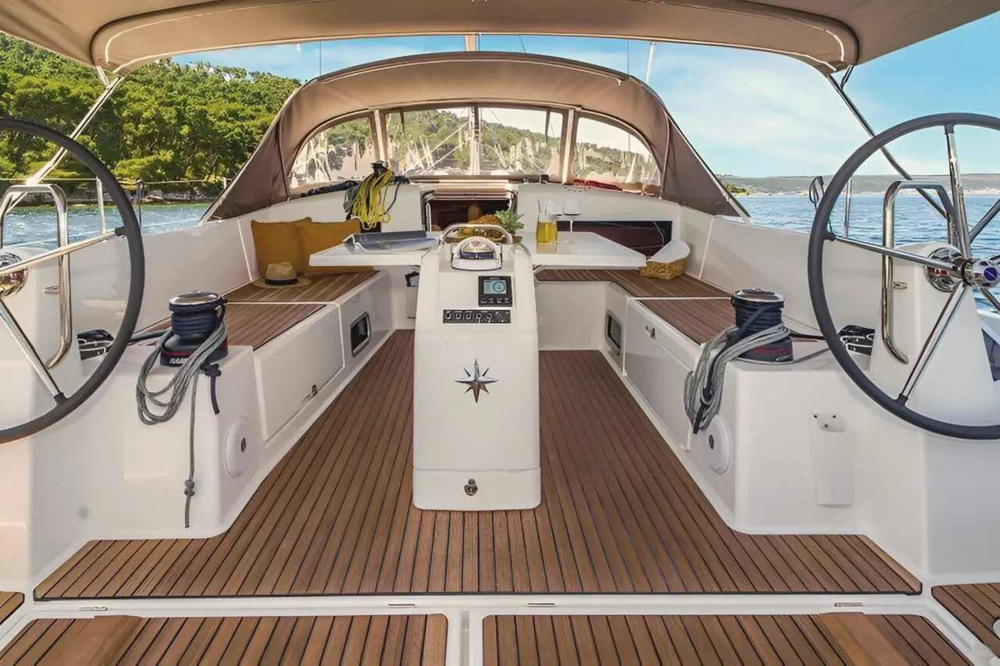
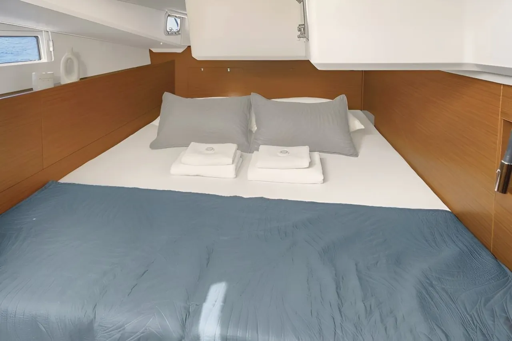
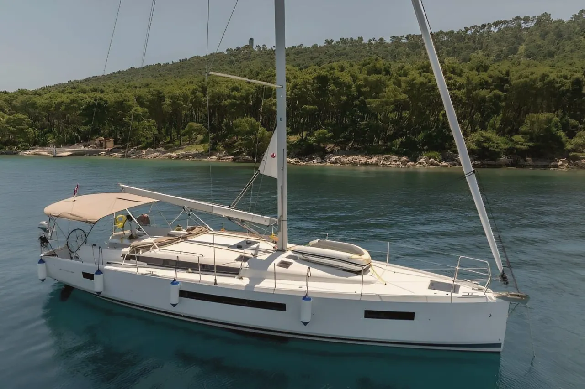
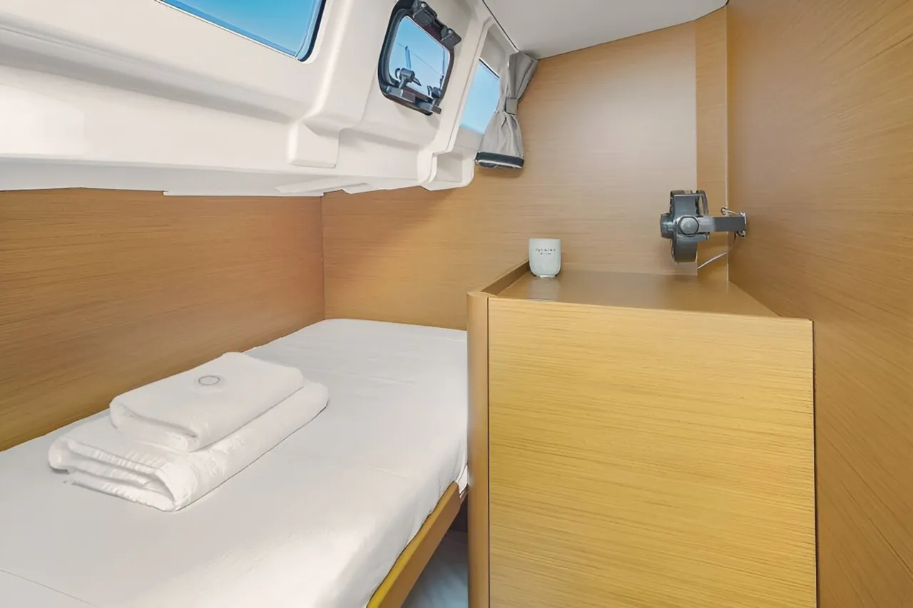
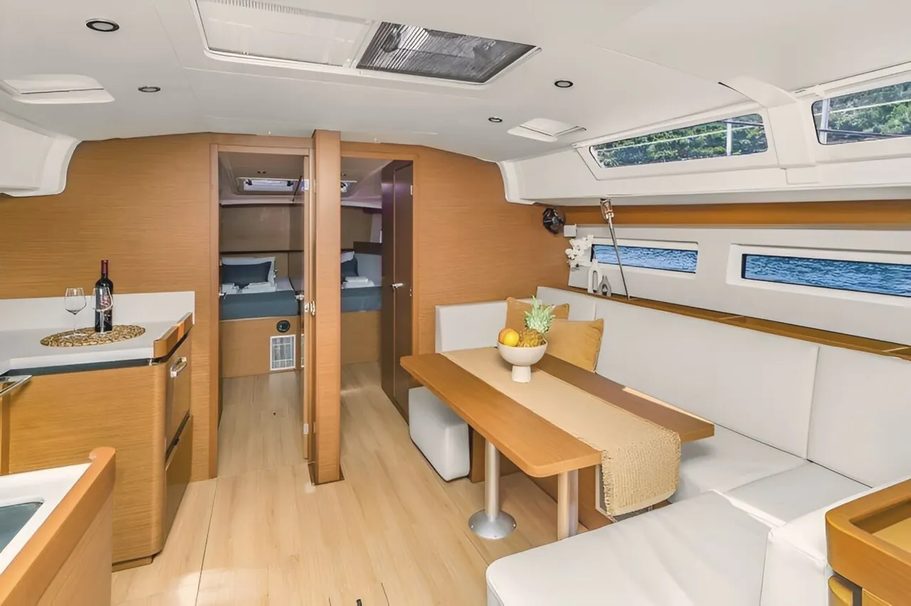
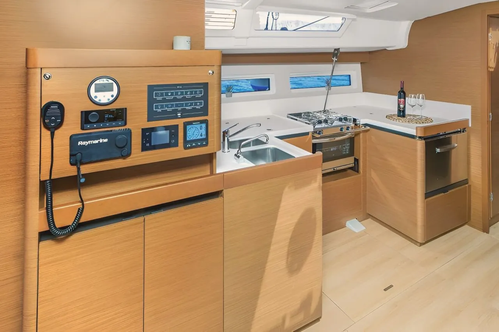

7 NOCY POD ŻAGLAMI
Tydzień żeglowania po chorwackim Adriatyku.

Złapmy jeszcze trochę lata na Adriatyku!
Wrzesień, chorwackie wyspy, turkusowa woda i siedem nocy pod żaglami!
Zabieramy Was na wspólną przygodę po Adriatyku. Przed nami klimatyczne porty, malownicze zatoki, piękne widoki i mnóstwo czasu na odpoczynek oraz odkrywanie nowych miejsc.
Możecie wybrać klasyczny jacht żaglowy albo bardziej przestronny katamaran. Niezależnie od wyboru czekają nas wspólne śniadania na pokładzie, kąpiele w morzu, lokalne jedzenie i wieczory w ekstra towarzystwie.
Dużo natury, żeglarskiej zajawki, dobrych ludzi i jeszcze trochę wakacyjnego lata!
Tydzień żeglowania po chorwackim Adriatyku.
Dwie opcje zakwaterowania — wybierz tę, którą lubisz.
Turkusowe zatoki, malownicze miejscowości i piękne krajobrazy.
Kameralna atmosfera, wspólna przygoda i dużo swobody.
Wrzesień to świetny moment, żeby przedłużyć sobie wakacyjny klimat i spędzić trochę czasu na wodzie.
Wspólnie odkrywamy chorwackie wybrzeże, odwiedzamy portowe miasteczka i zatrzymujemy się w pięknych zatokach.
Lubimy takie podróżowanie, bo każdego dnia możemy zobaczyć coś nowego. Raz spędzić więcej czasu na morzu, innym razem wybrać się na spacer po kamiennym miasteczku lub po prostu odpocząć na pokładzie.
Nie trzeba mieć doświadczenia żeglarskiego. Rejs prowadzi skipper, dzięki czemu możemy skupić się na wspólnym wyjeździe.
Bez napiętego harmonogramu, za to z pięknymi widokami i ekstra ludźmi!

Przez cały tydzień jacht jest naszym wakacyjnym domem.
Klasyczny jacht żaglowy to świetna opcja dla tych, którzy chcą poczuć prawdziwy klimat żeglowania.
Kabiny do spania, wspólna przestrzeń, wyposażona kuchnia i miejsce na pokładzie pozwalają połączyć żeglarską przygodę z wygodnym pobytem.
W materiałach przedstawiamy jacht Jeanneau Sun Odyssey 490 jako przykładową jednostkę. Dokładny model i układ kabin na wrześniowe terminy potwierdzimy w szczegółach rezerwacji.
Jeśli cenisz większą przestrzeń do odpoczynku, możesz wybrać zakwaterowanie na katamaranie.
Dwie oddzielne części kadłuba, przestronna strefa wspólna i dużo miejsca na pokładzie sprawiają, że to świetna opcja na wspólny wypoczynek.
Dopłata do katamaranu wynosi 1000 zł od osoby.
Szczegóły konkretnej jednostki i podziału kabin będą przedstawione przed rezerwacją.

Kadry LONGWAVE

Kadry LONGWAVE



Przed nami chorwacki Adriatyk, który daje mnóstwo możliwości!
Oba kierunki są propozycjami inspiracyjnymi, a nie gwarantowanymi trasami. Ostateczny plan rejsu będzie zależał od portu rozpoczęcia, pogody, warunków żeglarskich i decyzji skippera.
Dla dorosłych, par, przyjaciół i wszystkich, którzy lubią morze i aktywne podróżowanie.
Zabierz znajomych, drugą połówkę albo dołącz samodzielnie. Na naszych wyjazdach zawsze jest okazja do poznania nowych ludzi.
Nie trzeba mieć doświadczenia żeglarskiego. Ważna jest chęć odkrywania nowych miejsc, wspólnego spędzania czasu i odrobina wakacyjnej zajawki!
Możliwość udziału rodzin z dziećmi uzgadniamy indywidualnie.
Poranna kawa na pokładzie, śniadanie z widokiem na morze, a wieczorem kolacja w klimatycznej tawernie.
Na jachcie mamy możliwość samodzielnego przygotowywania posiłków. Podczas postojów będzie też okazja do poznawania lokalnej kuchni.
Wyżywienie uczestników nie jest wliczone w cenę. Każdy pokrywa własne koszty jedzenia i napojów.
Wyżywienie skippera jest już zawarte w cenie wyjazdu.
Kawa, śniadanie i widok na morze.
Wypływamy w kierunku kolejnej zatoki lub portu.
Kąpiel, lunch i czas na odpoczynek.
Żeglowanie, zwiedzanie lub relaks w wybranej zatoce.
Odpoczynek na pokładzie i wieczorny spacer.
Lokalne smaki, rozmowy i wspólny czas.
Harmonogram jest przykładowy. Godziny, postoje i przebieg rejsu zależą od pogody oraz decyzji skippera.
Nie trzeba lecieć na drugi koniec świata, żeby oderwać się od codzienności i przeżyć coś wyjątkowego.
Czasem wystarczy kilka dni na morzu, piękne widoki i ludzie, z którymi naprawdę dobrze spędza się czas.
Zabieramy Was na Adriatyk, żeby wspólnie odkrywać nowe miejsca i nacieszyć się końcówką lata.
Wskakujcie na pokład — ruszamy po kolejne przygody LONGWAVE!
Porozmawiajmy o Twoim wyjeździe
Opowiedz nam, co planujesz. Pomożemy dobrać wyjazd, termin lub program dla Twojej grupy.